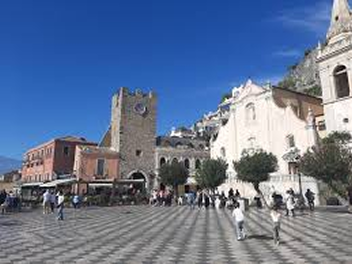
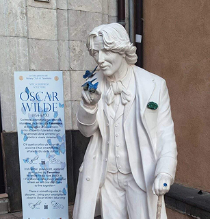
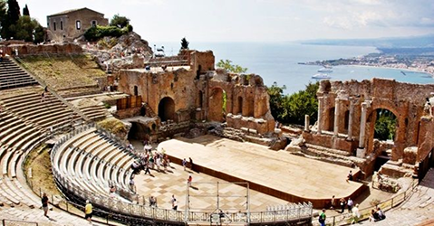
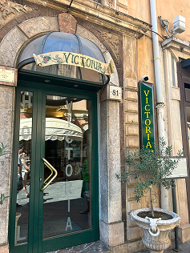
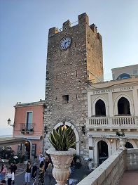

Cuore simbolico e culturale di Taormina
Non è solo uno spazio urbano ma intreccia l’arte, storia, turismo e tradizioni locali.9 Aprile indica la diffusione della falsa notizia dello sbarco di Giuseppe Garibaldi in Sicilia e gli abitanti festeggiarono proprio in piazza, perciò la data rimase legata all’idea di libertà e unità.




Taormina e gli artisti
Taormina divenne rifugio per artisti, scrittori e musicisti attirati dal paesaggio e del luogo non dimenticando il Teatro Antico di Taormina e l’Hotel Vittoria dove alcuni soggiornavano: Goethe, O.Wilde, D. H. Lawrence, Ritchard Strauss o Elizabeth Taylor.

Chiesa di S. Giuseppe
La Chiesa di S. Giuseppe è una chiesa barocca, costruita nel fine seicento e inizio settecento. Dedicata a s.Giuseppe, il patrono dei lavoratori e delle famiglie.E’ una delle attrazioni sia religiose che architettoniche.

Torre dell’Orologio
La Torre dell’Orologio, uno dei monumenti più iconici del posto. Inizialmente edificata nel XII secolo come parte delle mura difensive medievali, per poi essere distrutta e ricostruita nel 1676 e dotata di un orologio da cui deriva infatti il nome.
Eventi
Taormina include concerti musicali, opera lirica e danza, celebrazioni religiose, eventi popolari nelle piazze e cucina locale con una fusione di tradizione siciliana con influenze arabe e mediterranee.